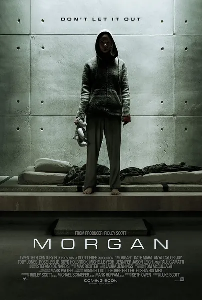

 Морган Morgan 2016 Триллер, Фантастика Кинопоиск: 5.8 IMDb: 5.9 В секретной корпоративной лаборатории уже пять лет выращивают Морган — существо, созданное методами синтетической биологии и развивающееся быстрее человека. После некоего инцидента туда направляют специалиста по оценке рисков Ли Уэзерс; у нее есть всего неделя, чтобы решить: кто перед ней — продукт или угроза? Проблема в том, что Морган — это пятилетний ребенок в теле взрослого, уже способный произнести: «Меня создали как оружие». Это атмосферный триллер о столкновении целесообразности и этики — и о том, как выглядит «отзыв продукции» в сфере биологии. Описание на английском In an underground corporate lab, Morgan has been grown for five years — a being made by synthetic biology, developing faster than a human. After an incident, risk consultant Lee Weathers is sent in with one week to assess: product or threat? The problem is Morgan is a five-year-old in an adult body, already capable of saying: 'I was made as a weapon.' An atmospheric thriller about expediency set against ethics — and about how a 'product recall' looks in biology.